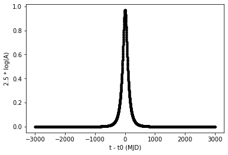

BAGLE TUTORIAL¶
To learn to use the model.py code and make microlensing events and obtain/graph various information such as the amplification of the event or the astrometric shift, we have created a Jupyter Notebook tutorial.
PSPL Model - No Parallax¶
The first step in the tutorial is to generate a PSPL model with no parallax and do the following:
- Get amplification of event
- Animate the microlensing event
- Plot the astrometric shift


PSPL Model - With parallax¶
The second step is to generate a PSPL model with parralax adding the ra (right ascention of lens) and dec (declination of lens).
PSPL Model From Belokurov and Evans 2002 (Figure 1)¶
Now we will do perform tests with an image from a paper and graph the lens, source, and image positions in addition to graphing the shifts on the sky.